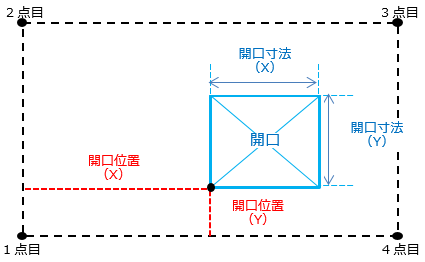

| 壁の生成 |
| 1 |
断面ID（id_section）と合致する断面IDの断面タイプを取得する。タイプが見つからない場合はタイプを生成する。 |
| 2 |
節点IDリスト（StbNodeid_List）から配置座標を取得し、座標から下部の拘束レベル、上部の拘束レベルを取得する。 |
| 3 |
取得した断面タイプ、レベル、節点座標位置、オフセット（offset）、構造スリット（上・下・右・左）から壁を生成する。 |
| 4 |
斜壁は変換対象外とする。 |
| 5 |
壁生成後、インスタンスパラメータに各属性を設定する。 |
| 6 |
パラメータ 構造用途 はST-Bridgeの値がWALL_NORMALの場合は「構造結合」、WALL_SHEARの場合は「耐力」を設定する。 |
| 壁開口の生成 |
| 1 |
壁の配置で生成した構造壁ファミリを抽出する。 |
| 2 |
開口（StbOpen）の開口位置（X）（position_X）、開口位置（Y）（position_Y）、開口寸法（X）（length_X）、開口寸法（Y）（length_Y）から開口の位置、サイズを得る。 |
| 3 |
開口の回転は変換対象外とする。 |
| 4 |
1で抽出した構造壁に壁開口を生成する。
 |
| パラペットの生成 |
| 1 |
パラペットは壁として生成する。 |
| 2 |
断面ID（id_section）と合致する断面IDの断面タイプを取得する。タイプが見つからない場合はタイプを生成する。 |
| 3 |
始端節点ID（idNode_start）、終点節点ID（idNode_end）から配置座標を取得し、座標から下部の拘束レベル、上部の拘束レベルを取得する。 |
| 4 |
取得した断面タイプ、レベル、オフセット、節点座標位置、高さから壁を生成する。 |
| 5 |
斜壁は変換対象外とする。 |
| 6 |
パラペット生成後、インスタンスパラメータに各属性を設定する。 |